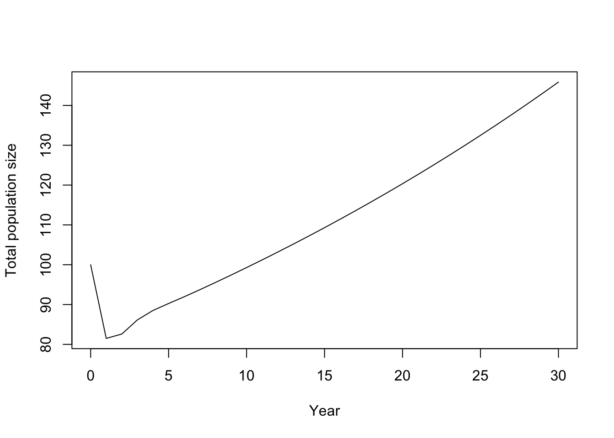
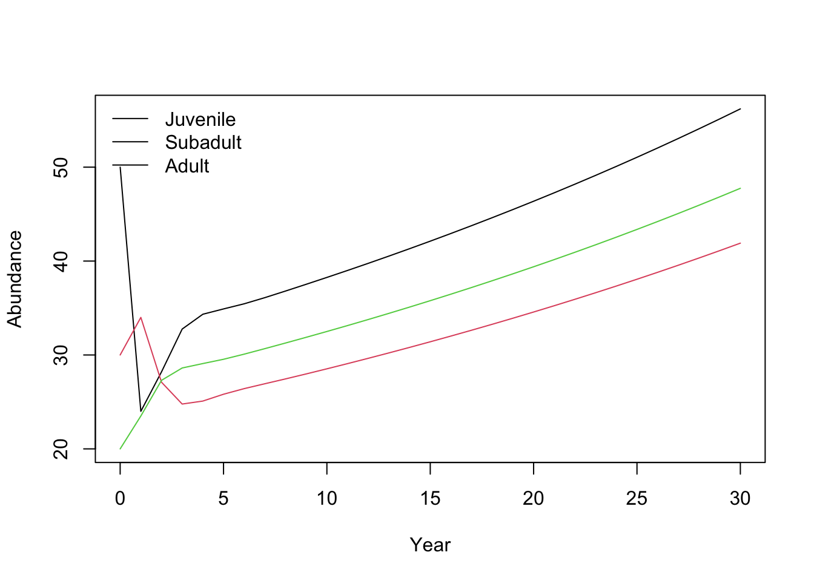
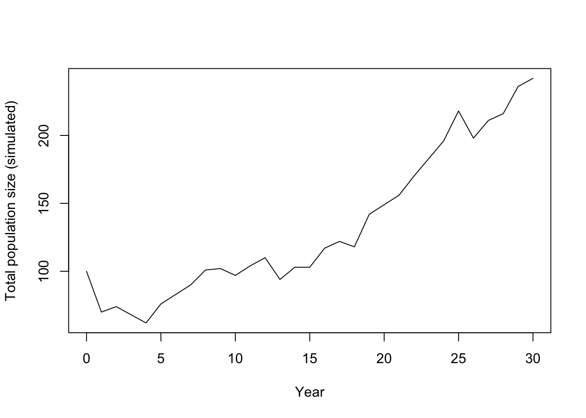
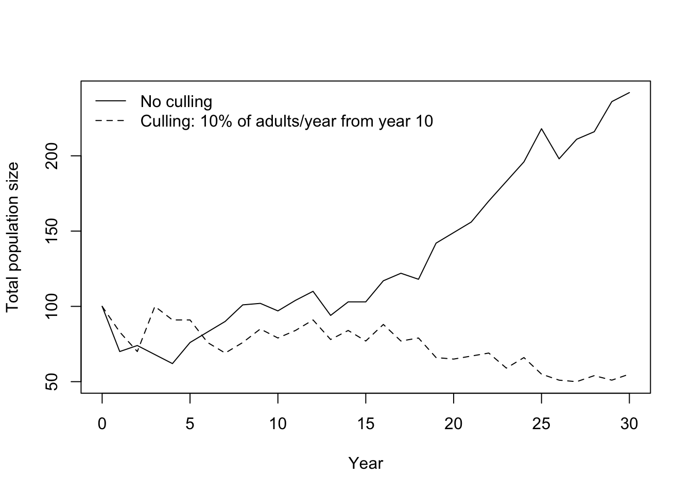
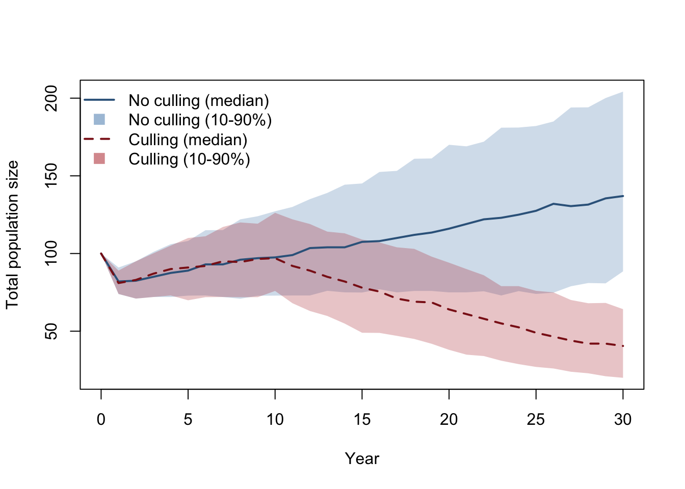

15 Matrix Population Models (MPMs): Projection and Simulation
This short tutorial introduces matrix population models (MPMs) and shows two closely related uses:
- Projection: how a population vector is projected forward through time using a matrix.
- Simulation: how the same structure can be used to explore scenarios (e.g. culling) and quantify uncertainty.
The examples use a simple 3-stage life cycle. The goal is to be clear about:
- the projection interval (time step, \(\Delta t\)),
- how survival/transition and reproduction appear in the matrix,
- how to project a population vector \(\mathbf{n}_t\),
- how to convert the deterministic model into a basic stochastic simulation.
The background reading is the chapter Growth of Age-Structured and Stage-Structured Populations in Neal. The chapter “Matrix population modelling” covers building a matrix, projection and \(\lambda\) in more detail, using the popdemo package; here we do everything in base R.
15.1 Learning outcomes
Learning outcomes:
- Explain why the vital rates in a matrix must match the projection interval \(\Delta t\).
- Build a stage-structured projection matrix in base R, project a population forward and calculate \(\lambda\) with
eigen(). - Explain the difference between a deterministic projection and a stochastic simulation with demographic stochasticity.
- Write a simulation once as a function, and use it to run replicate simulations and summarise their uncertainty.
- Use simulation to compare management scenarios (proportional harvest, fixed quotas, contraception) and explain the results in terms of the life cycle.
15.2 What is a matrix population model?
An MPM describes how a structured population changes over discrete time steps.
15.3 The projection interval (\(\Delta t\))
MPMs are defined for a particular projection interval \(\Delta t\) (the time step between updates). Common choices are:
- \(\Delta t = 1\) year (very common in ecology)
- \(\Delta t = 1\) month (or other shorter steps)
Key rule: the vital rates you put in the matrix must match the chosen \(\Delta t\).
- If \(\Delta t\) is one year, use annual survival and annual fertility/recruitment.
- If \(\Delta t\) is one month, use monthly survival and monthly recruitment.
A common mistake is mixing time scales (e.g. monthly survival with yearly reproduction).
15.4 The population vector
Let \(\mathbf{n}_t\) be a vector of abundances at time \(t\) (measured in units of \(\Delta t\)):
\[ \mathbf{n}_t = \begin{bmatrix} n_{1,t} \\ n_{2,t} \\ \vdots \\ n_{k,t} \end{bmatrix} \]
Each element is the number (or density) in a class (age/stage/size/etc.).
15.5 The projection matrix
Let \(\mathbf{A}\) be a square matrix of vital rates. The basic model is:
\[ \mathbf{n}_{t+\Delta t} = \mathbf{A}\,\mathbf{n}_t \]
Interpretation of entries:
- Survival / transition: individuals moving between classes (including remaining in the same class)
- Reproduction: production of new individuals (often into the first class)
15.6 A simple 3-stage model
We will use three stages:
- Juvenile (J)
- Subadult (S)
- Adult (A)
The life-cycle assumptions (per \(\Delta t = 1\) year) are:
- Adults produce juveniles: \(F_A\) juveniles per adult per year (recruits to J). This is a fertility: the number of new juveniles counted at the next census per adult, so it already includes the survival needed to reach that count, not just the number born (see the fecundity box in the chapter “Matrix population modelling”).
- Juveniles that survive and grow move to Subadult with probability \(G_J\).
- Subadults either:
- survive and remain subadult with probability \(P_S\), or
- survive and grow to adult with probability \(G_S\).
- Adults survive and remain adult with probability \(P_A\).
A common stage-structured (Lefkovitch) matrix is:
\[ \mathbf{A} = \begin{bmatrix} 0 & 0 & F_A \\ G_J & P_S & 0 \\ 0 & G_S & P_A \end{bmatrix} \]
15.8 Define vital rates and build \(\mathbf{A}\)
# Vital rates for a 1-year projection interval
F_A <- 1.2 # recruits (juveniles) per adult per year
G_J <- 0.35 # juvenile -> subadult (survive + grow)
P_S <- 0.55 # subadult -> subadult (survive + stay)
G_S <- 0.25 # subadult -> adult (survive + grow)
P_A <- 0.80 # adult -> adult (survive + stay)
# Build the projection matrix (rows = stage at t+1, cols = stage at t)
A <- matrix(
c(0, 0, F_A,
G_J, P_S, 0,
0, G_S, P_A),
nrow = 3, byrow = TRUE
)
dimnames(A) <- list(
c("Juvenile", "Subadult", "Adult"),
c("Juvenile", "Subadult", "Adult")
)
# Print matrix so we can check entries
A## Juvenile Subadult Adult
## Juvenile 0.00 0.00 1.2
## Subadult 0.35 0.55 0.0
## Adult 0.00 0.25 0.815.10 One-step projection
## [,1]
## Juvenile 24.0
## Subadult 34.0
## Adult 23.5Given the stage abundances at time \(t\), multiplying by \(\mathbf{A}\) gives the expected abundances at time \(t+1\) (because \(\Delta t=1\) year here).
15.11 Project for many years (deterministic)
# Number of projection steps
years <- 30
# Matrix to store yearly stage abundances
nmat <- matrix(NA_real_, nrow = years + 1, ncol = length(n0))
colnames(nmat) <- names(n0)
# Set initial year
nmat[1, ] <- n0
# Project forward one year at a time
for (t in 1:years) {
nmat[t + 1, ] <- as.numeric(A %*% nmat[t, ])
}
head(nmat, 6)## Juvenile Subadult Adult
## [1,] 50.0000 30.00000 20.00000
## [2,] 24.0000 34.00000 23.50000
## [3,] 28.2000 27.10000 27.30000
## [4,] 32.7600 24.77500 28.61500
## [5,] 34.3380 25.09225 29.08575
## [6,] 34.9029 25.81904 29.5416615.11.1 Plot totals and stage trajectories
# Total abundance each year
totalN <- rowSums(nmat)
# Plot total abundance
plot(
0:years, totalN, type = "l",
xlab = "Year", ylab = "Total population size"
)
# Plot stage-specific abundances
matplot(
0:years, nmat, type = "l", lty = 1,
xlab = "Year", ylab = "Abundance"
)
legend("topleft", legend = colnames(nmat), lty = 1, bty = "n")
15.12 Long-term growth rate (\(\lambda\))
For a constant matrix \(\mathbf{A}\), the asymptotic growth rate is the dominant eigenvalue \(\lambda\).
# Eigenvalues of the projection matrix
eig <- eigen(A)
# Dominant eigenvalue is asymptotic growth rate lambda
lambda <- Re(eig$values[which.max(Re(eig$values))])
lambda## [1] 1.01942- If \(\lambda > 1\): growth (on average) per time step
- If \(\lambda = 1\): stationary
- If \(\lambda < 1\): decline
Here \(\lambda\) is only just above 1 (1.019): the population is expected to grow by about 2% per year. Keep this in mind for the management scenarios below: a population that is only just growing does not need much extra mortality to tip it into decline.
15.13 Simulation: adding stochasticity and management actions
Deterministic projection treats the model output as exact expectations. In reality:
- births and deaths vary (demographic stochasticity),
- vital rates vary across years (environmental stochasticity),
- management can intervene (culling, supplementation, etc.).
Below is a transparent stochastic simulation that:
- simulates reproduction with Poisson variation,
- simulates survival/transitions with binomial variation,
- allows a simple culling intervention.
This simulation includes demographic stochasticity only: the matrix (the vital rates) is the same every year, and the randomness comes from the fact that a whole number of individuals survive, grow or are born, by chance. Environmental stochasticity (good and bad years, with different vital rates) is covered in the chapter “Stochastic population growth”, and in an optional exercise at the end of this chapter.
15.13.1 Writing the simulation once, as a function
We are going to run the same simulation many times, with and without culling, so we write it once as a function. The function:
- Reads the vital rates from the matrix
A(so if you change the matrix, the simulation changes too). - Creates an output matrix with one row per year and one column per stage, and fills row 1 with the initial stage abundances (
n0). - For each year, reads the current stage counts (
nJ,nS,nA). We do not call theseJ,SandA: the nameAis already taken by the projection matrix, and overwriting it would silently break everything that uses the matrix afterwards. - If the year has reached
cull_start, removes individuals from the target stage: a proportioncull_prop(each individual is removed with that probability), plus a fixed numbercull_n. Both are 0 by default (no culling). - Draws the number of births and transitions using random distributions:
- births from adults: Poisson,
- survival/transition events: Binomial.
- Writes the resulting stage counts into the next row, and returns the whole trajectory.
The stored counts are the census counts before any cull. The cull is applied to the working counts only, just before breeding and survival.
simulate_once <- function(A, n0, years,
cull_stage = "Adult", cull_prop = 0, cull_n = 0,
cull_start = 10) {
# Step 1: read the vital rates from the projection matrix
F_A <- A["Juvenile", "Adult"]
G_J <- A["Subadult", "Juvenile"]
P_S <- A["Subadult", "Subadult"]
G_S <- A["Adult", "Subadult"]
P_A <- A["Adult", "Adult"]
# Step 2: a matrix to store the trajectory, with year 0 in row 1
out <- matrix(0L, nrow = years + 1, ncol = 3)
colnames(out) <- c("Juvenile", "Subadult", "Adult")
out[1, ] <- as.integer(n0[c("Juvenile", "Subadult", "Adult")])
for (t in 1:years) {
year <- t - 1 # row t holds year t - 1
# Step 3: current stage counts at the census
n_now <- out[t, ]
# Step 4: culling, once the start year has been reached
if (year >= cull_start) {
removed <- rbinom(1, size = n_now[cull_stage], prob = cull_prop) + cull_n
removed <- min(removed, n_now[cull_stage]) # cannot remove more than are there
n_now[cull_stage] <- n_now[cull_stage] - removed
}
nJ <- n_now["Juvenile"]
nS <- n_now["Subadult"]
nA <- n_now["Adult"]
# Step 5: births, survival and transitions
newJ <- rpois(1, lambda = F_A * nA) # births from adults
J_to_S <- rbinom(1, size = nJ, prob = G_J) # juvenile -> subadult
S_stay <- rbinom(1, size = nS, prob = P_S) # subadult stays subadult
S_remaining <- nS - S_stay # the rest either grow or die
p_grow_cond <- if ((1 - P_S) > 0) G_S / (1 - P_S) else 0
S_to_A <- rbinom(1, size = S_remaining, prob = p_grow_cond)
A_surv <- rbinom(1, size = nA, prob = P_A) # adult survival
# Step 6: write next year's abundances
out[t + 1, "Juvenile"] <- newJ
out[t + 1, "Subadult"] <- J_to_S + S_stay
out[t + 1, "Adult"] <- S_to_A + A_surv
}
out
}The subadult step needs a little explanation. A subadult has three possible fates: stay subadult (\(P_S\)), grow to adult (\(G_S\)) or die (\(1 - P_S - G_S\)). We first draw how many stay. Among the rest, the probability of growing (rather than dying) is \(G_S / (1 - P_S)\), so on average a fraction \(G_S\) of all subadults grow, as in the matrix.
15.13.2 One simulated trajectory (no culling)
Each run draws new random numbers, so your trajectory will differ from the one shown here. Run the chunk a few times to see how much it varies.
sim1 <- simulate_once(A, n0, years)
# Plot the total population trajectory
plot(0:years, rowSums(sim1), type = "l",
xlab = "Year", ylab = "Total population size (simulated)")
We can calculate the realised \(\lambda\) for this trajectory. This is the average yearly multiplication rate over the whole run, \((N_T / N_0)^{1/T}\), where \(N_0\) and \(N_T\) are the total population sizes at the start and at the end, after \(T\) years.
## [1] 1.029897This is a finite-horizon, trajectory-specific estimate. Different runs give different values, scattered around the deterministic \(\lambda\) (1.019). (In many ecology texts the long-run stochastic growth rate is written \(\lambda_s\); that is related to, but not the same as, a single-run realised value.) If the population goes extinct, \(N_T = 0\) and so the realised \(\lambda\) is 0. It is better to report extinction separately, as we do below with many replicates.
15.13.3 Add a culling intervention
Example: from year 10 onwards, harvest 10% of the adults each year (each adult has a probability of 0.1 of being removed). This is a proportional harvest: the number removed goes up and down with the number of adults.
A proportional harvest of adults has the same effect as multiplying the adult column of the matrix by 0.9 (only 90% of adults are left to breed and survive). So we can predict its long-term effect with a deterministic calculation before we simulate it:
A_harvest <- A
A_harvest[, "Adult"] <- A_harvest[, "Adult"] * 0.9
(lambda_harvest <- max(Re(eigen(A_harvest)$values)))## [1] 0.9600498With a 10% adult harvest, \(\lambda\) falls from 1.019 to 0.96, so once harvesting starts the population should change from slowly growing to declining by about 4% per year. Now the simulation:
sim_cull <- simulate_once(A, n0, years,
cull_stage = "Adult", cull_prop = 0.1, cull_start = 10)
# Compare trajectories: solid = no culling, dashed = culling
plot(0:years, rowSums(sim1), type = "l",
xlab = "Year", ylab = "Total population size",
ylim = range(c(rowSums(sim1), rowSums(sim_cull))))
lines(0:years, rowSums(sim_cull), lty = 2)
legend("topleft", legend = c("No culling", "Culling: 10% of adults/year from year 10"),
lty = c(1, 2), bty = "n")
# Realised lambda from each simulated trajectory
tot_cu <- rowSums(sim_cull)
realised_lambda_cu <- (tot_cu[years + 1] / tot_cu[1])^(1 / years)
data.frame(
scenario = c("No culling", "Culling"),
final_N = c(tot_no[years + 1], tot_cu[years + 1]),
realised_lambda = c(realised_lambda_no, realised_lambda_cu)
)## scenario final_N realised_lambda
## 1 No culling 242 1.0298971
## 2 Culling 55 0.9802693Interpretation:
- realised \(\lambda > 1\): the population grew over the simulated period,
- \(0 <\) realised \(\lambda < 1\): it declined,
- realised \(\lambda = 0\): it went extinct at some point in the simulated period.
These are just two runs, and with only about 100 individuals chance plays a large part. The realised \(\lambda\) for the culling run is also averaged over the whole 30 years, including the first 10 years without culling. To compare the scenarios properly, we need many replicates.
15.13.4 Many replicates (uncertainty bands)
A single run is one possible realisation. We typically run many replicates and summarise. Here we run two sets of replicates (no culling vs culling), then compute the median and 10-90% interval for each year. Note: different studies may use different interval widths (for example, 95% intervals) depending on purpose and reporting conventions.
# Number of Monte Carlo replicates
nreps <- 200
# Store total abundance per year (rows) for each replicate (columns)
totals_no <- matrix(NA_real_, nrow = years + 1, ncol = nreps)
totals_cull <- matrix(NA_real_, nrow = years + 1, ncol = nreps)
for (rep in 1:nreps) {
# Scenario A: no culling
totals_no[, rep] <- rowSums(simulate_once(A, n0, years))
# Scenario B: 10% of adults harvested each year from year 10
totals_cull[, rep] <- rowSums(simulate_once(A, n0, years,
cull_stage = "Adult",
cull_prop = 0.1))
}
# Summarise each year across replicates (median and 10-90% interval)
summarise_reps <- function(totals) {
data.frame(
year = 0:(nrow(totals) - 1),
median = apply(totals, 1, median),
lo = apply(totals, 1, quantile, probs = 0.1),
hi = apply(totals, 1, quantile, probs = 0.9)
)
}
sum_no <- summarise_reps(totals_no)
sum_cu <- summarise_reps(totals_cull)
# Scenario A vs Scenario B: compare summaries in one figure
plot(sum_no$year, sum_no$median, type = "n",
xlab = "Year", ylab = "Total population size",
ylim = range(c(sum_no$lo, sum_no$hi, sum_cu$lo, sum_cu$hi)))
# Ribbon for no-culling uncertainty (10-90%)
polygon(
x = c(sum_no$year, rev(sum_no$year)),
y = c(sum_no$lo, rev(sum_no$hi)),
col = grDevices::adjustcolor("steelblue", alpha.f = 0.25),
border = NA
)
# Ribbon for culling uncertainty (10-90%)
polygon(
x = c(sum_cu$year, rev(sum_cu$year)),
y = c(sum_cu$lo, rev(sum_cu$hi)),
col = grDevices::adjustcolor("firebrick", alpha.f = 0.25),
border = NA
)
# Median trajectories on top of ribbons
lines(sum_no$year, sum_no$median, lwd = 2, col = "steelblue4")
lines(sum_cu$year, sum_cu$median, lwd = 2, lty = 2, col = "firebrick4")
legend("topleft",
legend = c("No culling (median)", "No culling (10-90%)",
"Culling (median)", "Culling (10-90%)"),
lty = c(1, NA, 2, NA),
lwd = c(2, NA, 2, NA),
pch = c(NA, 15, NA, 15),
col = c("steelblue4", grDevices::adjustcolor("steelblue", alpha.f = 0.5),
"firebrick4", grDevices::adjustcolor("firebrick", alpha.f = 0.5)),
pt.cex = c(1, 1.5, 1, 1.5),
bty = "n")
Two useful summaries of the replicates are the median final population size and the proportion of replicates that went extinct (an estimate of the probability of extinction within 30 years):
data.frame(
scenario = c("No culling", "Culling 10% of adults"),
median_final_N = c(median(totals_no[years + 1, ]), median(totals_cull[years + 1, ])),
prob_extinct = c(mean(totals_no[years + 1, ] == 0), mean(totals_cull[years + 1, ] == 0))
)## scenario median_final_N prob_extinct
## 1 No culling 137.0 0
## 2 Culling 10% of adults 40.5 0Notice that even without culling a few replicates can go extinct by chance, although \(\lambda > 1\): demographic stochasticity matters in small populations.
15.14 Your task
15.14.1 Exercise 1: Projection interval sanity check
- In the tutorial, \(\Delta t = 1\) year. Write one sentence explaining what that means.
- Suppose you wanted \(\Delta t = 1\) month. What changes would you need to make to the interpretation of:
- \(P_A\)?
- \(F_A\)?
- Name one real reason you might prefer monthly time steps over yearly ones.
15.14.2 Exercise 2: Change one vital rate and re-run projections
- Reduce adult survival from \(P_A = 0.80\) to \(P_A = 0.70\). Rebuild
A, then recompute:- the deterministic projection plot,
- \(\lambda\).
- Does the population grow or decline now? How can you tell?
- Run
simulate_once()with the new matrix. Do you need to change the function? Why not?
Hint: change P_A in the chunk that defines the vital rates, then re-run the chunks from there onwards (building A, the projection loop and eigen()).
15.14.3 Exercise 3: Culling as management
- Change the harvest from 10% to 20% of adults per year. Before you run it, predict \(\lambda\) under the new harvest using the deterministic calculation (multiply the adult column of
Aby 0.8). Then run the replicates and compare the median trajectory, the uncertainty bands and the probability of extinction. - Now use a fixed quota instead: remove exactly 5 adults per year from year 10 (
cull_prop = 0,cull_n = 5). How does the probability of extinction compare with the 10% harvest? Why is a fixed quota riskier for a small population than a proportional harvest? - To identify which stage is most impactful, run the same culling intensity for each stage separately (juveniles, subadults, adults: change
cull_stage), then compare results. Do this both for a fixed quota of 5 individuals per year and for a 10% harvest. Which stage has the largest effect, and why?
Hint for question 3: ask how many future juveniles an individual in each stage is “worth”. The left eigenvector of A (the reproductive values) does this for you: v <- Re(eigen(t(A))$vectors[, 1]); v / v[1].
15.14.4 Exercise 4: Contraception treatment (reduced fertility)
Design a second management treatment where fertility is reduced instead of removing individuals.
- Keep survival/transition rates unchanged, but reduce fertility from year 10 with a 90% effective contraceptive treatment (multiply
F_Aby 0.1 from year 10 onwards). - Implement this by adding an argument
fert_multtosimulate_once()(with defaultfert_mult = 1), and usingF_A * fert_multinstead ofF_Ain the births step from yearcull_startonwards. - Run replicate simulations for:
- baseline (no treatment),
- culling treatment (10% of adults per year),
- contraception treatment.
- Compare all three scenarios in one figure and discuss which treatment gives the largest reduction in population growth. Also predict the long-term \(\lambda\) for the contraception treatment with a deterministic calculation.
15.14.5 Exercise 5 (optional): Environmental stochasticity
So far the vital rates are the same every year. Make adult survival vary between years: in each year, with probability 0.5 the year is “good” (\(P_A = 0.9\)) and otherwise it is “bad” (\(P_A = 0.7\)). The average is still 0.8. Modify a copy of simulate_once() to draw the type of year at the start of each year, and compare the spread of the replicate trajectories with the original simulation.
15.15 Takeaways
- Every rate in a matrix model refers to the projection interval \(\Delta t\): survival, growth and fertility must all be per \(\Delta t\).
- Deterministic projection gives the expected trajectory and, for a constant matrix, the long-term growth rate \(\lambda\) (the dominant eigenvalue).
- A stochastic simulation with the same vital rates shows the range of outcomes that chance alone produces. In small populations this includes extinction, even when \(\lambda > 1\).
- Writing the simulation once as a function makes it easy to run many replicates and to compare scenarios fairly.
- A proportional harvest is equivalent to changing the matrix, so its long-term effect on \(\lambda\) can be predicted before simulating. A fixed quota is much riskier for a small population, because the proportion removed rises as the population shrinks.
- Removing individuals from different stages has very different effects: individuals in stages with high reproductive value (here adults) matter most.
15.16 Notes and extensions
- If you include juvenile stasis (juveniles surviving but remaining juveniles), add a \(P_J\) term and include it in the matrix and simulation.
- The deterministic matrix model is most useful for structure and long-term behaviour (\(\lambda\), stable stage structure, elasticities).
- Stochastic simulations are most useful for short-term variability and scenario exploration (management, uncertainty, risk).